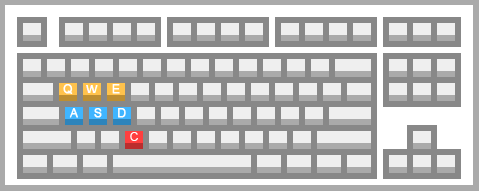

Help
Twitter Annotator is an UI-Prototype for annotating tweets. Currently, it has a dummy back-end to showcase the concept. This page will help you to use the prototype. It also showcases all the features.
Interface
1
Previous Tweet
If you want to navigate to the previous tweet, click on this button. For example, you want to change a previous choice or look back.
2
Pause
If you want to take a break, click on this button. This will inform the system and will give us the capability to analyze the active time.
3
Next Tweet
If you want to skip the current tweet or navigate to the to the front, click on this button.
4
Irrelevant
Choose irrelevant if the current tweet contains only boilerplate text chunks and has no statement, question, promise or order issued.
5
Neutral
Choose neutral if the current tweet has no stance taking expressions.
6
Opinionated
Choose opinionated if the current tweet expresses a stance on a topic or an idea.
7
Tweet
The current tweet message.
8
Help
Shows the current help page.
Features
browser history support
tweet syntax highlight
Keyboard shortcuts
| Q | previous Tweet |
| E | next Tweet |
| A | set Irrelevant |
| S | set Neutral |
| D | set Opinionated |
| C | pause/resume |
| W | toggle Help |
Dev
If you want to contribute to this project or if you want to use it as a base for your next project check out the GitHub TwitterAnnotator repository.
Size Error
min-width: 320px
min-height: 270px
JavaScript Disabled
This web app needs JavaScript enabled or JavaScript enabled devices!